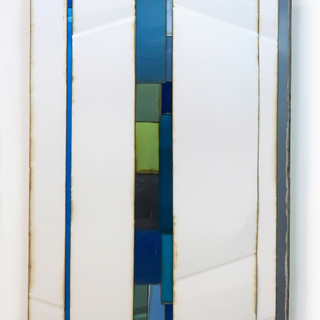

SCOTT MCMILLIN
Car Parts
November 12 – December 17, 2021

BIO
Born in 1985 in California
Studied: Cal State Long Beach and Cal State Fullerton, B.F.A.
Currently lives and works in Tustin, California
Using discarded car parts and scrap metal cut into squares and rectangles, McMillin rearranges them into geometric patterns and free form abstractions.
Scott McMillin has shown in galleries and sculpture parks across the country. He participated in the prestigious Navy Pier Walk exhibit, in Chicago and the El Paseo Sculpture Walk in Palm Desert, CA. Internationally collected, his works are in the permanent collections of the Flint Institute of Art, Mitchell Museum and Cedarhurst Sculpture Park in Mt. Vernon, Illinois, International Sculpture Center, Lowes HIW, Inc., Norwegian Cruise Lines, Chase Bank, Fleetwood Windows and Doors, the City of Flossmoor, Illinois as well as numerous private and corporate collections.
Statement
My sculptures are influenced and inspired by the overwhelming importance of the car in Southern California, and are in fact composed entirely of salvaged auto body parts — mainly hoods, doors, fender panels and pick-up beds. I see these car parts as infused with the memories and histories of the individual vehicles as well as the lives of their former owners. As I cut, combine and create each sculpture, it’s almost like reflecting on traffic, on the ways in which people’s lives come together, randomly intersecting on freeways or streets or parking lots for brief periods of time, nobody knowing who may be driving beside them or parked next to them, and not even taking a moment to think about it. Safe in our mobile metal fortresses, focused entirely on where we’re going and how soon we’re going to get there, we carry on with hardly a care about what’s happening now. I express these ongoing confluences in the patterns of my work, as conceptual representations of countless vehicles constantly interacting with one another in infinite ways. In a sense, my sculptures chronicle moments in time, epitomizing detached encounters with total strangers, insignificant yet integral to how we live our daily lives.
TO RECEIVE A PDF WITH PRICING AND AVAILABLE WORKS PLEASE CONTACT US HERE